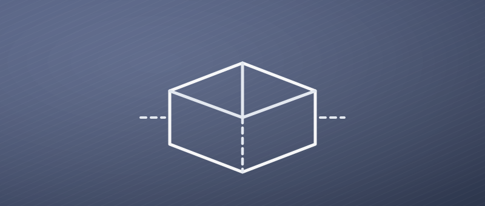
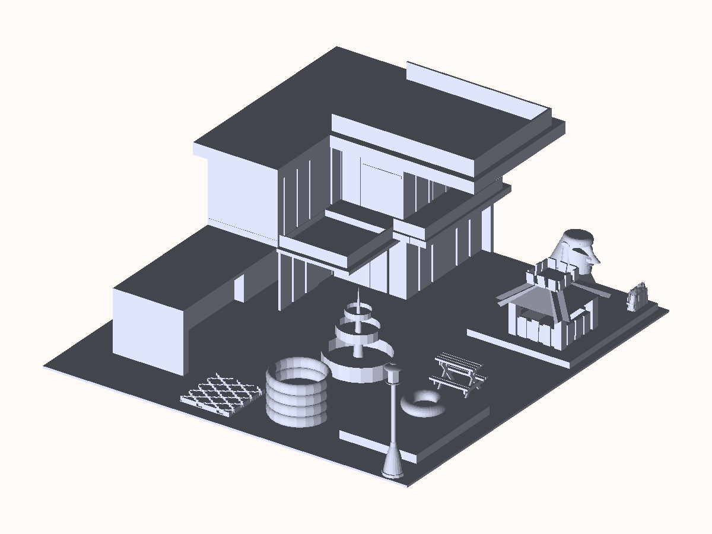
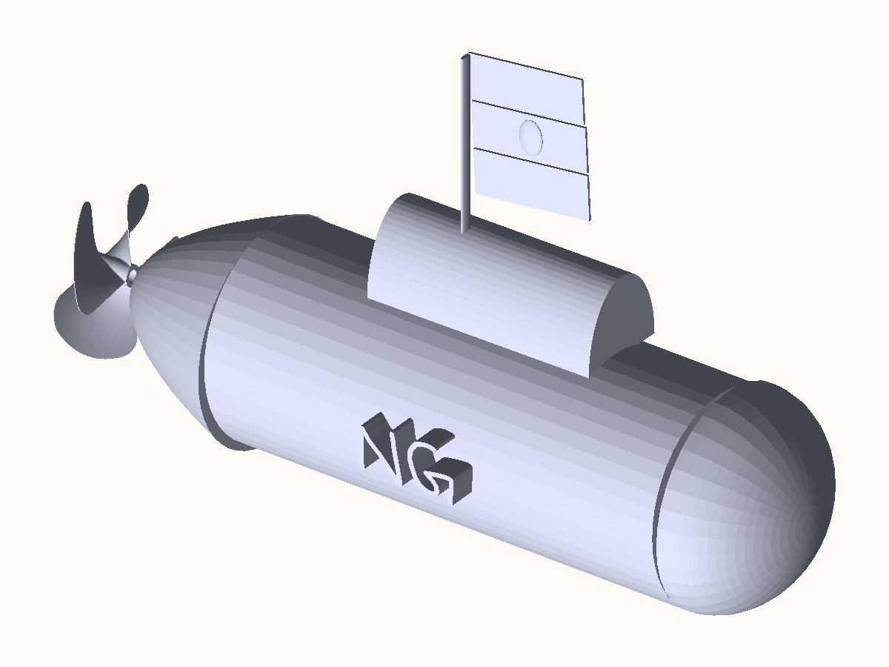
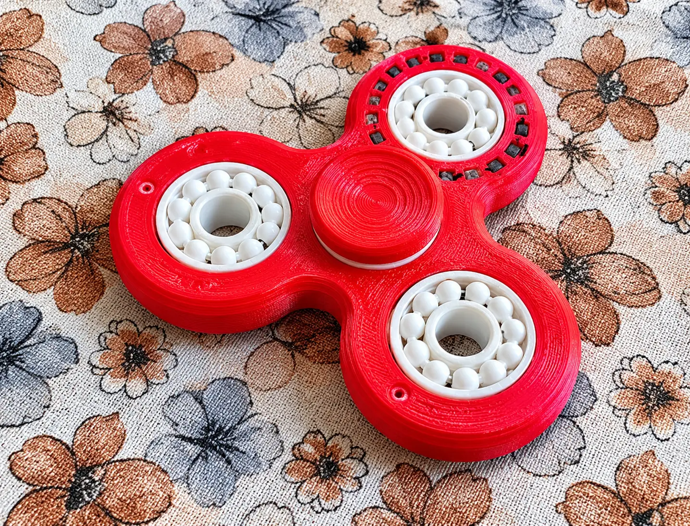

Drawn first
Designs
CAD models — the parts and assemblies I draw before anything gets built.

I use Tinkercad and Onshape for CAD designing. I am still a beginner, but aim for imporving in the near future.
Gallery
Selected Models

A whole backyard modelled end to end for a Backyard Challenge: a two-storey house with a covered veranda, a garden shed, a tiered fountain beside a raised circular pond, a lamp post, a picnic table, a planting bed under a lattice, and a covered seating area against a rock feature.

A submarine modelled from scratch: a cylindrical pressure hull with a domed bow, a conning tower, a three-bladed propeller on the stern, and a flag flying from a short mast. My initials are embossed into the side of the hull.

A tri-lobed spinner I designed and printed, taking the pattern on one lobe from Demon Slayer. Three white ceramic bearings sit in the arms, a fourth press-fits into the centre behind a round cap, and a ring of square cut-outs runs around the top lobe. Printed in red, and published on MakerWorld for anyone else who wants to make one.